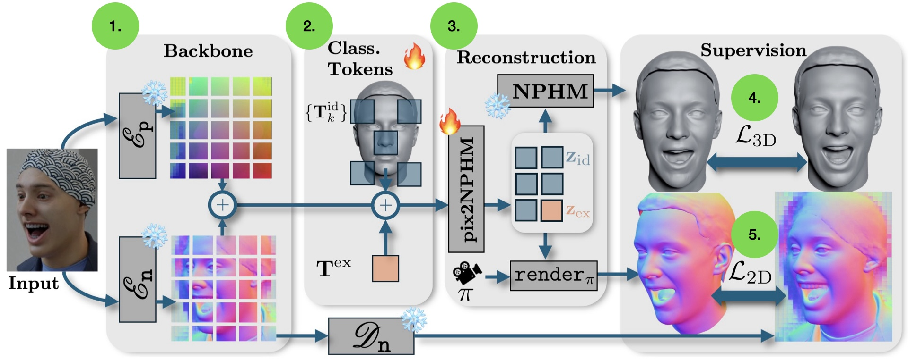

Tracking Results of Pix2NPHM.
From left to right: input, overlay, reconstrcutions.
Neural Parametric Head Models (NPHMs) are a recent advancement over mesh-based 3d morphable models (3DMMs) to facilitate high-fidelity geometric detail. However, fitting NPHMs to visual inputs is notoriously challenging due to the expressive nature of their underlying latent space. To this end, we propose Pix2NPHM, a vision transformer (ViT) network that directly regresses NPHM parameters, given a single image as input. Compared to existing approaches, the neural parametric space allows our method to reconstruct more recognizable facial geometry and accurate facial expressions. For broad generalization, we exploit domain-specific ViTs as backbones, which are pretrained on geometric prediction tasks. We train Pix2NPHM on a mixture of 3D data, including a total of over 100K NPHM registrations that enable direct supervision in SDF space, and large-scale 2D video datasets, for which normal estimates serve as pseudo ground truth geometry. Pix2NPHM not only allows for 3D reconstructions at interactive frame rates, it is also possible to improve geometric fidelity by a subsequent inference-time optimization against estimated surface normals and canonical point maps. As a result, we achieve unprecedented face reconstruction quality that can run at scale on in-the-wild data.
Results Comparisons NeRSemble.
We show comparisons against two recent SotA FLAME-based reconstruction models, SHeaP (feed-forward) and Pixel3DMM (optimization-based).
Reconstructed Geometry.
Tracking Comparisons.
Comparisons of Sota tracker Pixel3DMM against our feed-forward tracking predictions. Our NPHM-based feed-forward predictor predictions reaches higher fidelity than a FLAME-based counterpart.

1. The input image is encoded using geometrically pretrained ViTs, which remain frozen during the training of Pix2NPHM. The backbones are pretrained using pixel-aligned surface Normal and position prediction tasks, similar to Pixel3DMM.
2. The resulting token sequences is extended with classification tokens for identity (1 global token and 65 local tokens) and expression (1 token).
3. After several transformer layers, the classifcation tokens are read-out for NPHM parameter prediction using a small MLP-head. The implicit surface can be rendered, or extracted using marching cubes.
4. For 3D datasets we supervise using the differences between induces SDF-functions between predicted and g.t. NPHM prarameters.
5. For 2D datasets, we use Pixel3DMM normal estimates as pseudo g.t. supervision against normal renderings.
@article{giebenhain2025pix2nphm,
title={Pix2NPHM: Learning to Regress NPHM Reconstructions From a Single Image},
author={Giebenhain, Simon and Kirschstein, Tobias and Schoneveld, Liam and Davoli, Davide and Chen, Zhe and Nie{\ss}ner, Matthias},
journal={arXiv preprint arXiv:2512.17773},
year={2025}
}